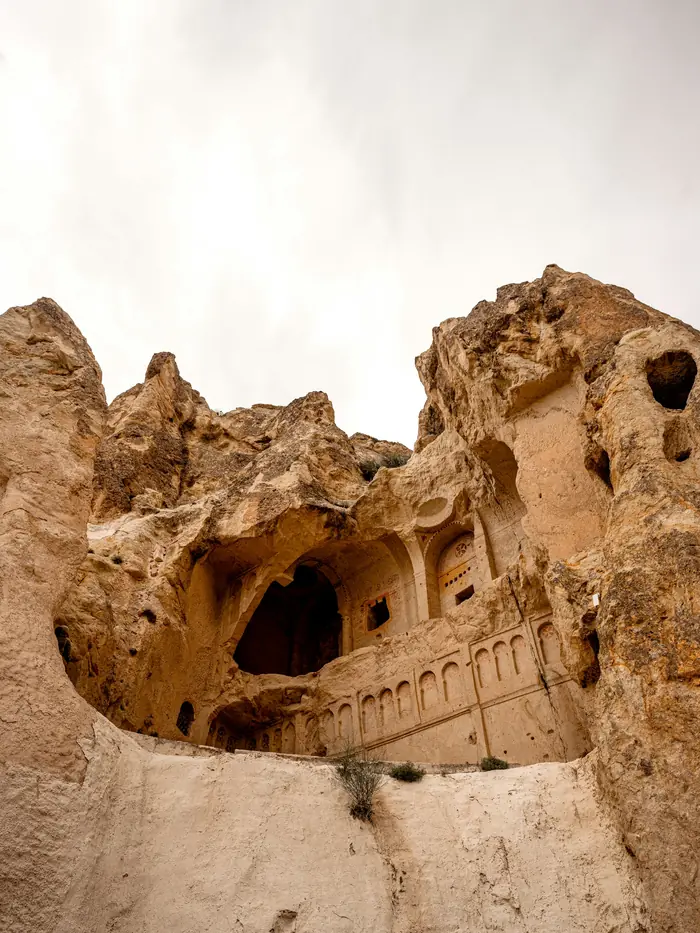
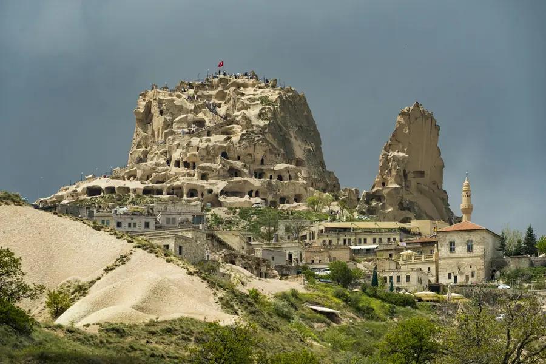
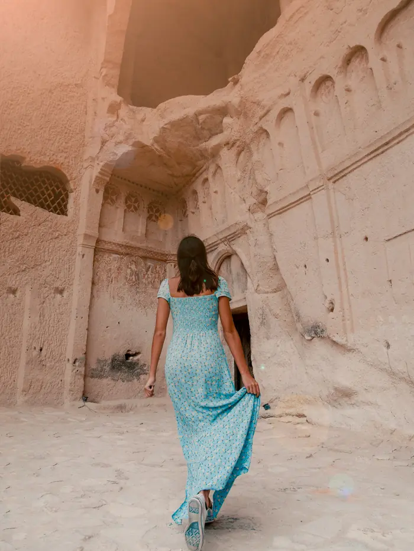

Летели с двумя детьми, боялись, что рано вставать бессмысленно. Встали в четыре и не пожалели ни секунды: пилот объяснял всё по дороге, а внизу ждал завтрак.
Регион
Ландшафт, который вырезали ветер и люди
Каппадокия лежит на плато в центре Анатолии, на высоте около 1000 метров. Вулканы Эрджиес и Хасандаг засыпали долину пеплом, тот слежался в туф — породу настолько мягкую, что её режут обычной пилой, и настолько прочную, что высеченные дома стоят тысячу лет.
Дожди и ветер вымыли из туфа столбы с базальтовыми «шляпами» — те самые peribacaları, «дымоходы фей», в честь которых названо наше агентство. Люди продолжили работу стихии: выдолбили в скалах жилища, храмы, голубятни и целые города под землёй.



-
60 млн лет назад
Вулканы засыпают плато
Извержения Эрджиеса и Хасандага оставляют слои пепла толщиной до 150 метров. Со временем они спекаются в туф.
-
IV век до н. э.
Первые высеченные жилища
Область упоминается как Καππαδοκία — от древнеперсидского «страна прекрасных лошадей».
-
IV—XI века
Пещерные монастыри Гёреме
В скалах вырубают сотни церквей с фресками. Многие росписи сохранились до наших дней — сухой воздух работает лучше реставраторов.
-
VII—X века
Города уходят под землю
Деринкую и Каймаклы разрастаются на восемь ярусов вниз. В убежищах помещались тысячи людей вместе со скотом и запасами.
-
1985 год
Список ЮНЕСКО
Национальный парк Гёреме и скальные памятники Каппадокии вносят в список Всемирного наследия.
-
Сегодня
До 150 шаров каждое утро
В высокий сезон полёты начинаются за час до восхода — и заканчиваются, как только поднимается ветер.